Table of contents
- Summary & classification
- Purpose, scope & audience
- Roles & portals
- Credential reference (Karachi)
- End-to-end workflow overview
- Illustrated procedures (screenshots)
- Figures 1–16 — Admin unlock through vendor completion
- Task statuses & actions
- Security, PIN rotation & device hygiene
- Troubleshooting
- Glossary
- Support & escalation
- Document control & approvals
1 Summary & classification
This manual describes how to use the Kickstart Vendor Hub mobile application for day-to-day maintenance and operations across cities, branches (sites), and vendor accounts.
The PDF pairs concise guidance with device screenshots captured on a representative handset. Currency examples use PKR.
2 Purpose, scope & audience
Purpose
Enable consistent onboarding for operations managers, coordinators, and vendor technicians: first-run setup, secure admin access, task creation and oversight, vendor execution (costs, photos, completion), and PIN governance.
Scope
In scope: mobile app flows for Admin & operations and Vendor portal, city-scoped data, dashboards, task lifecycle, and PIN/device-lock administration. Out of scope: backend API administration, database migrations, and third-party identity providers unless your organisation layers them on.
Audience
| Role | Typical use of this manual |
|---|---|
| Operations / admin | Unlock admin portal, switch city, create tasks, review costs, rotate vendor PINs, manage device password. |
| Field vendor | Sign in with city PIN, filter by branch, update task costs, attach evidence, hold or complete work. |
| IT / support | Credential expectations, troubleshooting table, escalation paths. |
3 Roles & portals
| Portal | Primary users | Capabilities (summary) |
|---|---|---|
| Admin & operations | Office staff | City dashboards, task creation and management, branch-level reporting, vendor PIN management per city, per-device admin unlock password. |
| Field vendor | On-site technicians | City PIN entry, My Tasks only — execute assigned work, enter costs, upload photos, Hold or Mark completed. |
First-run choice is stored on the device. A device configured as Field vendor does not expose admin navigation.
4 Credential reference — Karachi (seed / staging)
Use your organisation’s authoritative records in production. The table below aligns with a typical seeded deployment for training.
| Item | Description | Example value |
|---|---|---|
| Admin portal device password | Unlocks admin area on this device. Distinct from vendor city PINs. Change via Admin → Choose city → Admin portal device password. | Ksportaladmin1100 |
| Karachi vendor portal PIN | Vendor sign-in for Karachi. Rotating PIN under Vendor PINs invalidates prior sessions until vendors enter the new PIN. | 1122 |
| Karachi vendor account | Vendor code receiving tasks created for Karachi in this deployment. | KS_IT_KHI_VENDOR |
| Karachi branches | Sites available for assignment and filters. | VitalFoakh, BRR, Endeavour, Creekside, Mega, Clifton |
5 End-to-end workflow overview
Admin sequence (high level)
- Select Admin & operations at welcome; unlock with device password when prompted.
- Open Admin portal; choose Karachi (or your operating city) via navigation.
- Use Dashboard for counts and branch cost roll-ups; apply date filters as needed.
- Create tasks under Create Task; confirm vendor visibility for that city.
- Monitor and manage tasks under Task Management (search, filters, view/download/delete per policy).
- Maintain Vendor PINs and device lock settings according to security policy.
Vendor sequence (high level)
- Open Vendor portal; enter the city PIN issued for that location.
- On My Tasks, filter by branch if required; open a task card.
- On Task Detail, enter labour/installation (and other) costs, attach photos if required.
- Choose Hold when work pauses (visible to admin as on hold) or Mark completed when finished.
- Return to the list to verify status and totals.
6 Illustrated procedures (device screenshots)
Figures follow the recommended teaching order: welcome and admin access, security screens, dashboards and tasks, vendor sign-in and execution.
Figure 1 — Welcome / usage choice
Select Admin & operations for back-office features or Field vendor for PIN-only vendor access.
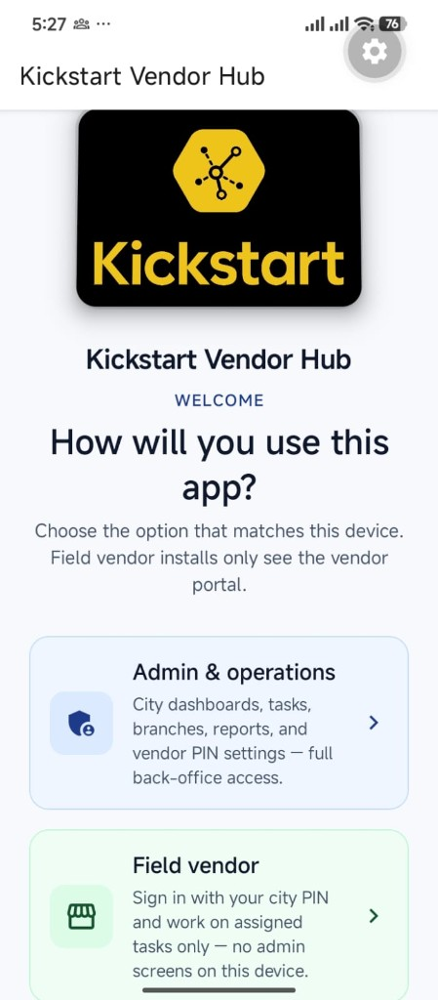
Figures 2–3 — Admin unlock & portal selection
Enter the admin portal device password, then choose Admin portal or Vendor portal.
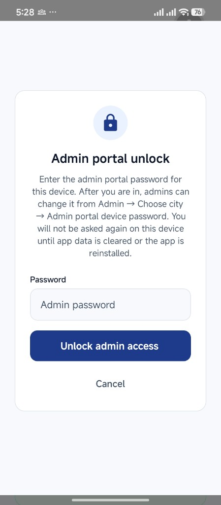
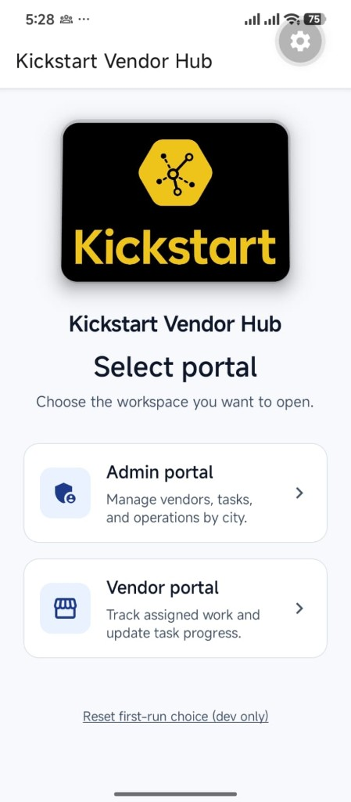
Figures 4–5 — Vendor PINs & admin device password
Vendor PINs: per-city PIN and generation counter. Admin portal device password: rotates the lock shown at admin unlock (not the vendor PIN).
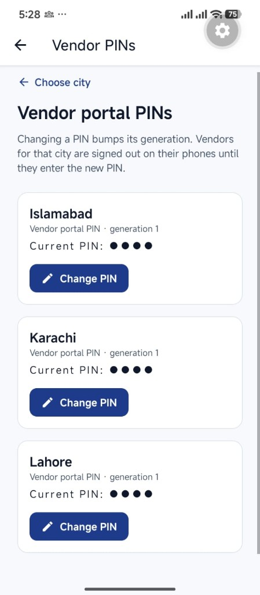
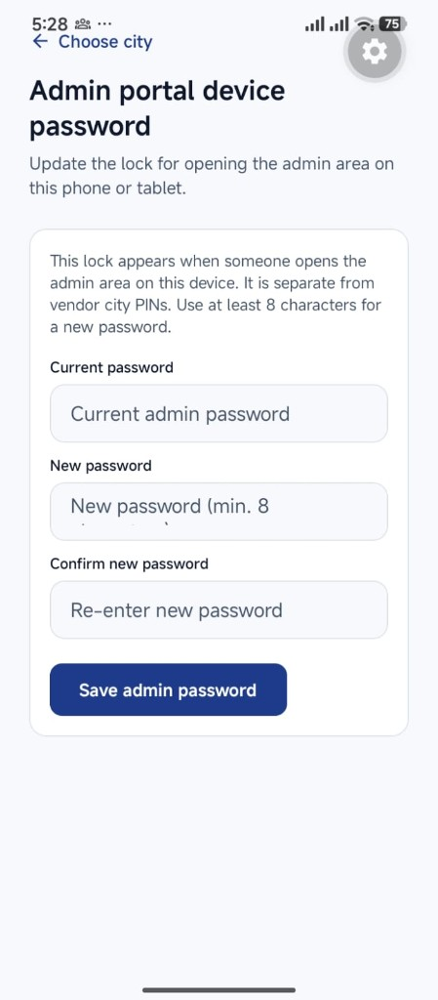
Figures 6–8 — Dashboard (Karachi)
Operations Overview summarises task counts; branch overview shows PKR totals; open the filter for date-range selection.
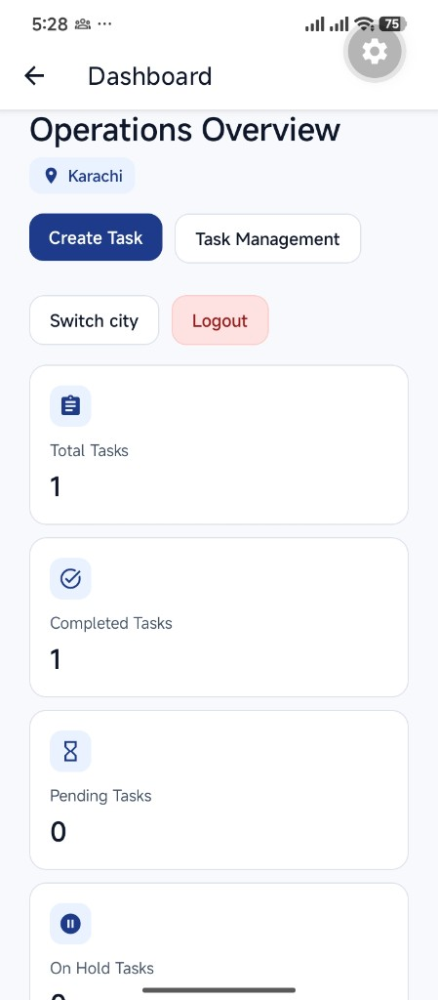
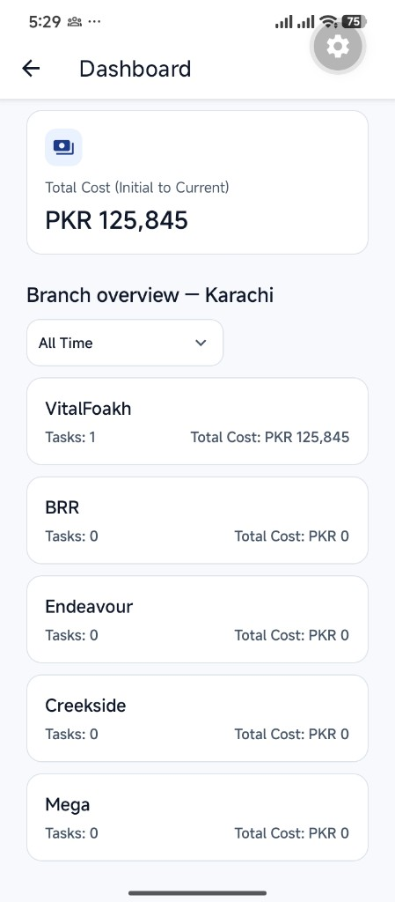
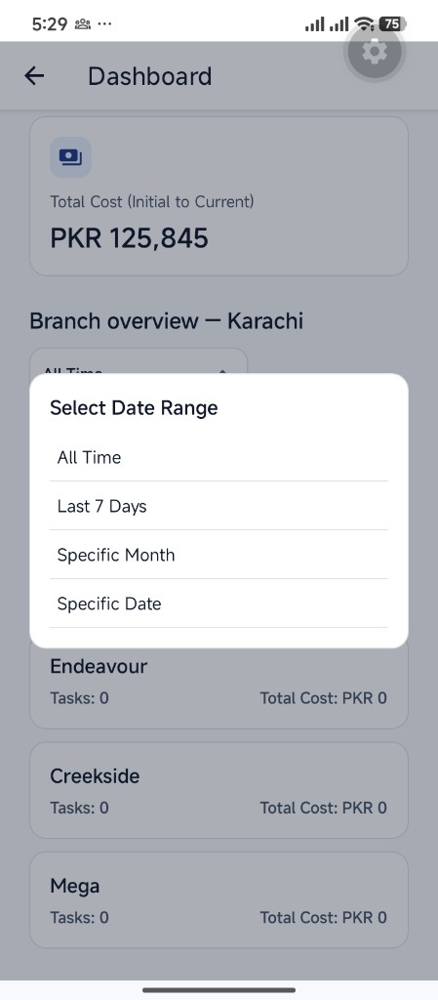
Figures 9–11 — Task Management & Create Task
Search and multi-filter task lists; create tasks with branch, category, vendor, and description; confirm success for the vendor queue.
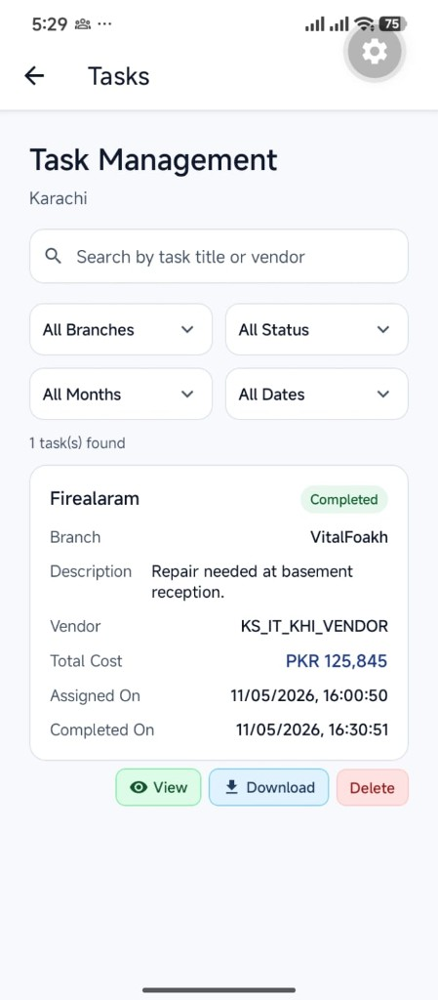
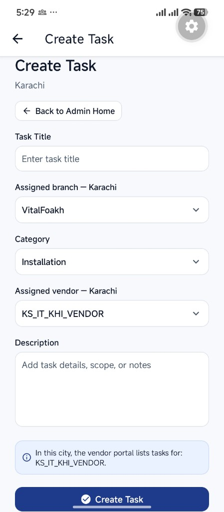
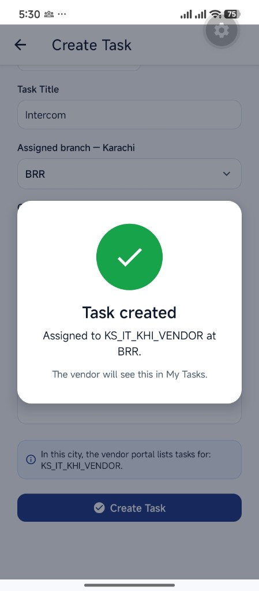
Figures 12–13 — Vendor sign-in & My Tasks
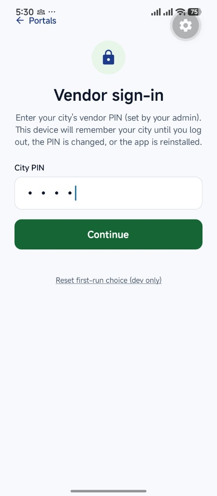
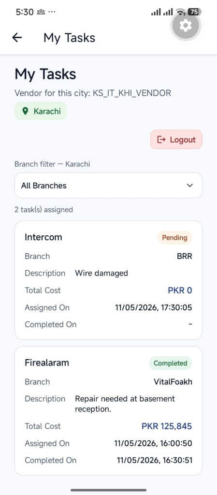
Figures 14–16 — Task detail & updated list
Hold vs Mark completed; list reflects completed status and totals.
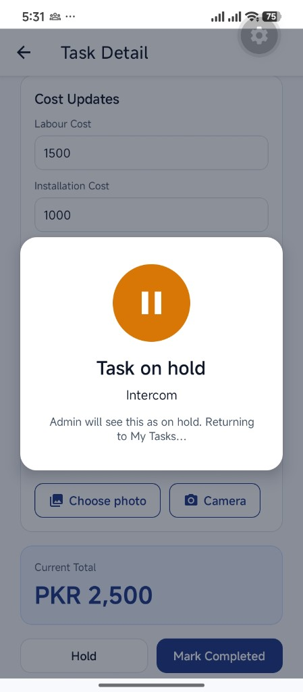
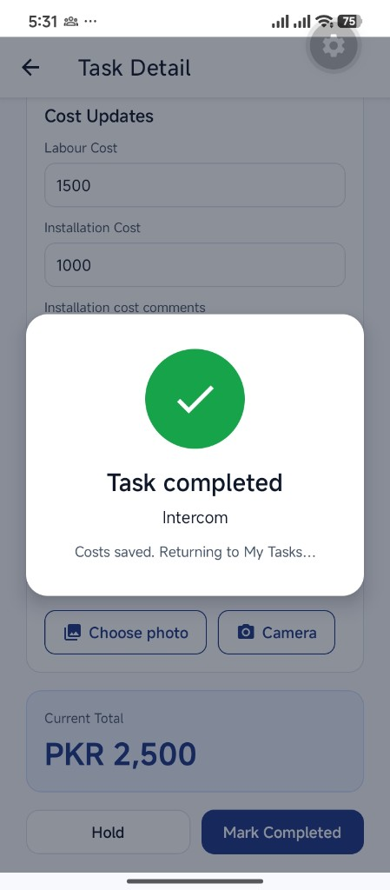
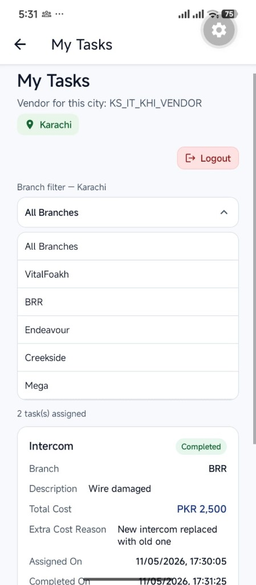
7 Task statuses & actions
| Status / action | Meaning | Who sees it |
|---|---|---|
| Pending | Assigned; vendor work not finished. | Vendor & admin lists. |
| On Hold | Paused (e.g. awaiting parts). Vendor initiated via Hold. | Vendor confirmation; admin dashboards/lists. |
| Completed | Closed with saved costs per policy. | Vendor & admin; affects dashboards and branch totals. |
| Delete (admin) | Removes task when policy allows; often confirmatory. | Admin Task Management. |
8 Security, PIN rotation & device hygiene
- Separate secrets: Admin device password ≠ vendor city PIN. Train staff not to reuse corporate SSO passwords for device locks.
- PIN rotation: Changing a vendor PIN under Vendor PINs bumps generation and signs vendors out until they enter the new PIN — plan communication before rotating.
- Lost devices: Treat like credential compromise; rotate PINs, clear app data or remote-wipe per MDM policy.
- Screenshots for audits: Mask PINs and passwords in external-facing evidence packs.
9 Troubleshooting
| Symptom | Recommended checks |
|---|---|
| Empty lists / no branches | Correct city selected; pull to refresh; verify network/VPN and API availability. |
| Admin unlock rejected | Confirm current device password vs default; caps lock; retry after typo. |
| Vendor PIN rejected | City matches PIN; ask ops for latest PIN if recently rotated. |
| Signed out unexpectedly | PIN generation may have changed — obtain new PIN from admin. |
| Camera / gallery blocked | OS permissions for camera and photos; retry after granting. |
10 Glossary
| Term | Definition |
|---|---|
| Branch | Site or location within a city (e.g. VitalFoakh, BRR, Clifton). |
| City PIN | Vendor portal credential scoped to a city; managed under Vendor PINs. |
| Generation (PIN) | Version counter; increments when PIN changes to invalidate old sessions. |
| Admin portal device password | Local lock for admin features on a specific device. |
| My Tasks | Vendor queue of assigned work for the signed-in city/vendor. |
11 Support & escalation
For production incidents (authentication outages, data not syncing, suspected unauthorised access), follow your internal IT service process. Capture: device model/OS, app version, city, approximate time, anonymised task IDs where safe, and whether PIN rotation occurred.
| Channel | Notes |
|---|---|
| Internal IT / helpdesk | Primary route for credential resets and access policy. |
| Operations lead | Branch/city scope and vendor coordination. |
| Application owner | Defects requiring code or configuration change. |
12 Document control & approvals
| Version | Date | Summary of changes |
|---|---|---|
| 3.1 | May 2026 | Professional PDF layout: cover, TOC, expanded guidance, glossary, footer pagination. |
| 3.0 | May 2026 | Karachi screenshot walkthrough; screenshots/manual/ naming. |
| 2.0 | — | Prior Lahore narrative. |
| Prepared by (name / role) | Date |
|---|---|
| Approved by (name / role) | Date |
Kickstart Vendor Hub — Operations Manual v3.1 · Regenerate PDF: npm run manual:pdf · Refresh images: npm run manual:screenshots